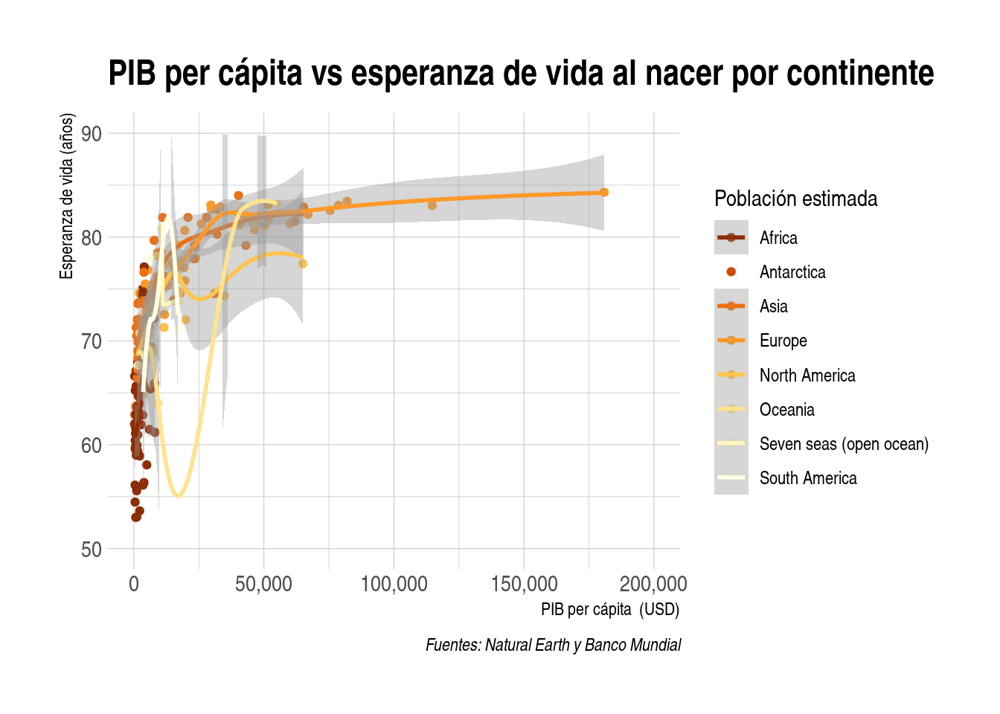

# Instalación de plotly
install.packages("plotly")
# Instalación de DT
install.packages("DT")9 ggplot2 y plotly - creación declarativa de gráficos interactivos
Trabajo previo
Lecturas
Chang, W. (2018). R graphics cookbook: Practical recipes for visualizing data. O’Reilly. https://r-graphics.org/
Wickham, H., & Grolemund, G. (2017). R for Data Science: Import, Tidy, Transform, Visualize, and Model Data (capítulo 3). O’Reilly Media. https://r4ds.had.co.nz/
Wickham, H., & Grolemund, G. (s. f.). R para Ciencia de Datos (1era ed.) (capítulo 3). https://es.r4ds.hadley.nz/
Wickham, H., Çetinkaya-Rundel, M., & Grolemund, G. (s. f.). R for Data Science (2nd ed.) (capítulo 2). https://r4ds.hadley.nz/
Wickham, H., Navarro, D., & Pedersen, T. L. (s.f.). ggplot2: Elegant graphics for data analysis. https://ggplot2-book.org/
Introducción
R proporciona una gran cantidad de funciones para la elaboración de gráficos estadísticos y otros tipos de visualizaciones. El paquete base de R, por ejemplo, contiene un conjunto básico de funciones muy versátiles, especialmente para gráficos simples de conjuntos de datos relativamente pequeños. Sin embargo, para visualizaciones más avanzadas, puede ser conveniente explorar otras bibliotecas.
ggplot2 es una de las bibliotecas más populares de graficación de R. Implementa el concepto de “gramática de gráficos”, que permite crear visualizaciones complejas a partir de capas y componentes simples. Forma parte de Tidyverse, por lo que se comunica muy bien con los demás paquetes de esta familia, enfocada en conjuntos de datos grandes y en ciencia de datos.
plotly es una biblioteca para crear gráficos interactivos y dinámicos. Contiene capacidades para agregar controles y mecanismos que le permiten al usuario interactuar con los gráficos y realizar operaciones como filtrados, acercamientos y alejamientos, entre otras.
El paquete DT, por su parte, permite presentar conjuntos de datos en tablas interactivas en las que se pueden realizar operaciones como ordenamientos, consultas y filtrados.
9.1 Instalación y carga
Los paquetes necesarios pueden instalarse con la función install.packages(). Ya que se usaron en capítulos anteriores, en este punto se asumen instalados los paquetes de Tidyverse.
Una vez instalados, los paquetes pueden cargarse con la función library():
# Carga conjunta de Tidyverse
# (incluye ggplot2, dplyr, readr y otros)
library(tidyverse)
# Carga de plotly
library(plotly)
# Carga de DT
library(DT)
# Carga de scales (para formatear ejes y leyendas en los gráficos)
library(scales)9.2 Conjuntos de datos de ejemplo
9.2.1 Países
Se carga un archivo CSV con los datos de países de Natural Earth unidos con los del indicador de esperanza de vida al nacer en 2022 del Banco Mundial (columna LIFE_EXPECTANCY). También incluye la columna correspondiente al producto interno bruto per cápita (columna GDP_PC).
# Carga de los datos de países
paises <-
read_csv(
"https://raw.githubusercontent.com/pf0953-programacionr/2024-ii/refs/heads/main/datos/natural-earth/paises-join-esperanzavida.csv"
)En el siguiente bloque de código, se utiliza la función datatable() del paquete DT, para desplegar las observaciones de países en una tabla.
# Tabla de datos de paises
paises |>
datatable(
options = list(
pageLength = 5,
language = list(url = '//cdn.datatables.net/plug-ins/1.10.11/i18n/Spanish.json')
)
)DT es un “envoltorio” (wrapper) de la biblioteca DataTables de JavaScript, un lenguaje ampliamente utilizado en el desarrollo de páginas web interactivas.
9.3 Paquetes de graficación
Se introducen los paquetes de graficación estadística ggplot2 y plotly. Se utiliza ggplot2 para elaborar los gráficos y plotly para hacerlos interactivos.
9.3.1 ggplot2
ggplot2 es un sistema para la creación declarativa de gráficos, creado por Hadley Wickham en 2005. Está basado en el libro The Grammar of Graphics, de Leland Wilkinson, un esquema general para visualización de datos que descompone un gráfico en sus principales componentes semánticos, tales como capas y geometrías.
9.3.1.1 Principales componentes de un gráfico
De acuerdo con The Grammar of Graphics, los tres principales componentes de un gráfico son:
- Datos (observaciones y variables).
- Conjunto de mapeos de las variables del conjunto de datos a propiedades visuales (aesthetics) del gráfico, tales como posición en el eje x, posición en el eje y, color, tamaño y forma, entre otras.
- Al menos una capa, la cual describe como graficar cada observación. Por lo general, las capas se crean con funciones de geometrías (ej. puntos, líneas, barras).
9.3.1.2 Opciones básicas
ggplot2 implementa un gráfico estadístico por medio de la función ggplot(), cuya sintaxis básica puede resumirse de la siguiente forma:
ggplot(data = <DATOS>) +
<FUNCION_GEOMETRIA>(mapping = aes(<MAPEOS>))El llamado a ggplot() crea un sistema de coordenadas (i.e. un “canvas”), al cual se le agregan capas. Su primer argumento es <DATOS>, el cual es usualmente un dataframe o un tibble.
La función aes() realiza los mapeos (<MAPEOS>) de las variables del conjunto de datos a las propiedades visuales del gráfico. Las capas se crean con funciones de geometrías (<FUNCION_GEOMETRIA>) como geom_point(), geom_bar() o geom_histogram(), entre muchas otras. Note el uso del operador + para agregar las capas al gráfico.
Como ejemplo, seguidamente se crea un gráfico de dispersión que muestra la variable producto interno bruto (PIB) per cápita (GDP_PC) en el eje X, y la variable esperanza de vida al nacer (LIFE_EXPECTANCY) en el eje Y.
# Gráfico de dispersión de PIB per cápita vs esperanza de vida al nacer
ggplot(data = paises) +
geom_point(mapping = aes(x = GDP_PC, y = LIFE_EXPECTANCY))
El bloque de código anterior puede reescribirse mediante un pipe, para pasar el conjunto de datos a ggplot(). También puede llamarse a aes() como un argumento de ggplot() y no de la función de geometría. Esto último acostumbra hacerse cuando los mapeos de las variables a las propiedades estéticas son los mismos en todas las capas del gráfico.
# Gráfico de dispersión de PIB per cápita vs esperanza de vida al nacer
paises |>
ggplot(aes(x = GDP_PC, y = LIFE_EXPECTANCY)) +
geom_point() +
scale_x_continuous(labels = comma, limits = c(0, NA))La función scale_x_continuous() permite usar comas como separadores de miles y establecer los límites del eje X. También evita la notación científica.
El gráfico muestra una relación positiva entre el PIB per cápita y la esperanza de vida al nacer. En otras palabras, mientras mayor es el PIB per cápita de un país, mayor es la esperanza de vida al nacer de sus habitantes.
9.3.1.3 Variables adicionales
Se pueden incluir variables adicionales en el gráfico mediante su mapeo a otras propiedades visuales. En el siguiente bloque de código, la variable correspondiente al continente (CONTINENT), se mapea a la propiedad color.
# Gráfico de dispersión de PIB per cápita vs esperanza de vida al nacer
# coloreado por continente
paises |>
ggplot(aes(x = GDP_PC, y = LIFE_EXPECTANCY, color = CONTINENT)) +
geom_point() +
scale_x_continuous(labels = comma, limits = c(0, NA))La misma variable puede mapearse a la propiedad visual shape (forma).
# Gráfico de dispersión de PIB per cápita vs esperanza de vida al nacer
# con formas de puntos correspondientes al continente
paises |>
ggplot(aes(x = GDP_PC, y = LIFE_EXPECTANCY, shape = CONTINENT)) +
geom_point() +
scale_x_continuous(labels = comma, limits = c(0, NA))
Los últimos continentes de la leyenda no se incluyen en el gráfico debido a que ggplot() solo muestra, por defecto, seis formas diferentes cuando se asignan de manera automática. Esto puede solucionarse si se asigna explícitamente una forma a cada categoría. En el siguiente bloque de código, se asignan manualmente tanto formas como colores a cada continente, mediante las funciones scale_shape_manual() y scale_color_manual().
# Gráfico de dispersión de PIB per cápita vs esperanza de vida al nacer
# con formas y colores correspondientes al continente
paises |>
ggplot(aes(x = GDP_PC, y = LIFE_EXPECTANCY, shape = CONTINENT, color = CONTINENT)) +
geom_point() +
scale_x_continuous(labels = comma, limits = c(0, NA)) +
scale_shape_manual(values = c(0, 1, 2, 3, 4, 5, 6, 7)) +
scale_color_manual(values = c("red", "blue", "green", "purple", "orange", "brown", "pink", "yellow"))
El siguiente bloque de código mapea la variable de la cilindrada con la propiedad visual tamaño (size) y compara el rendimiento en autopista de los automóviles con el rendimiento en ciudad.
# Gráfico de dispersión de PIB per cápita vs esperanza de vida al nacer
# con tamaño de puntos correspondiente a la población
paises |>
ggplot(aes(x = GDP_PC, y = LIFE_EXPECTANCY, size = POP_EST, color = CONTINENT)) +
geom_point() +
scale_size_continuous(labels = comma) +
scale_x_continuous(labels = comma, limits = c(0, NA))
La función scale_size_continuous() permite usar comas como separadores de miles y evitar la notación científica en la leyenda del gráfico.
9.3.1.4 Capas adicionales
Un mismo gráfico puede contener múltiples capas, cada una con su propia función de geometría. El siguiente bloque de código agrega una capa con la función geom_smooth(), la cual muestra una curva de tendencia.
# Gráfico de dispersión de PIB per cápita vs esperanza de vida al nacer
# + curva de tendencia
paises |>
ggplot(aes(x = GDP_PC, y = LIFE_EXPECTANCY)) +
geom_point() +
geom_smooth(method = 'lm') +
scale_x_continuous(labels = comma, limits = c(0, NA))
Ejercicios
1. Revise la documentación de geom_smooth() para agregar otros tipos de curvas de tendencia al gráfico.
En el siguiente ejemplo, se mapea la variable continente (CONTINENT) a la propiedad visual del color, tanto para la capa de puntos como para la de la curva de tendencia.
# Gráfico de dispersión de PIB per cápita vs esperanza de vida al nacer
# en África y Europa coloreado por continente
# + curva de tendencia
paises |>
filter(CONTINENT == 'Africa' | CONTINENT == 'Europe') |>
ggplot(aes(x = GDP_PC, y = LIFE_EXPECTANCY, color = CONTINENT)) +
geom_point() +
geom_smooth() +
scale_x_continuous(labels = comma, limits = c(0, NA)) +
scale_y_continuous(labels = comma, limits = c(50, 90))
9.3.1.5 Paneles
Como se mostró anteriormente, una forma de mostrar variables adicionales en un gráfico es mediante propiedades visuales (color, forma, tamaño, etc.). Otra forma es mediante el uso de paneles (facets), los cuales dividen un gráfico en subgráficos, de acuerdo con los valores de una variable. Este método es particularmente apropiado cuando la variable adicional es categórica.
La función facet_wrap() divide un gráfico en paneles de acuerdo con una sola variable. El primer argumento es una fórmula, la cual se crea con el caracter ~ (tilde) seguido por el nombre de la variable.
En el siguiente bloque de código, se generan paneles para cada continente con el gráfico de dispersión de PIB per cápita vs esperanza vida. Es decir, un panel (subgráfico) por cada continente.
# Gráfico de dispersión de PIB per cápita vs esperanza de vida al nacer
# + paneles por continente
paises |>
ggplot(aes(x = GDP_PC, y = LIFE_EXPECTANCY)) +
geom_point() +
facet_wrap(~ CONTINENT, nrow = 2) +
scale_x_continuous(labels = comma, limits = c(0, NA))
La función facet_grid() genera paneles con la combinación de dos variables. El primer argumento es también una fórmula, la cual contiene dos variables separadas por ~.
En el siguiente bloque de código, se generan paneles para el gráfico anterior, organizados por región de la ONU y grupo de ingresos.
# Gráfico de dispersión de PIB per cápita vs esperanza de vida al nacer
# + paneles por región y subregión de la ONU
paises |>
ggplot(aes(x = GDP_PC, y = LIFE_EXPECTANCY)) +
geom_point() +
facet_grid(REGION_UN ~ INCOME_GRP) +
scale_x_continuous(labels = comma, limits = c(0, NA))9.3.1.6 Títulos, etiquetas, estilos y colores
9.3.1.6.1 Titulos, subtítulos y etiquetas
ggplot2 incluye las funciones ggtitle(), xlab(), ylab() y labs(), las cuales permiten agregar títulos, subtítulos, etiquetas en los ejes y de otros tipos a un gráfico.
Algunas de las opciones que ofrecen estas funciones se ilustran en el siguiente gráfico.
# Gráfico de dispersión de PIB per cápita vs esperanza de vida al nacer
# en África y Europa coloreado por continente
# + curva de tendencia
paises |>
filter(CONTINENT == 'Africa' | CONTINENT == 'Europe') |>
ggplot(aes(x = GDP_PC, y = LIFE_EXPECTANCY, color = CONTINENT)) +
geom_point() +
geom_smooth() +
scale_x_continuous(labels = comma, limits = c(0, NA)) +
scale_y_continuous(labels = comma, limits = c(50, 90)) +
ggtitle("PIB per cápita vs esperanza de vida al nacer por continente") +
xlab("PIB per cápita (USD)") +
ylab("Esperanza de vida (años)") +
labs(subtitle = "Datos de África y Europa",
caption = "Fuentes: Natural Earth y Banco Mundial",
color = "Continente")El títulos y las etiquetas de los ejes se pueden agregar también mediante argumentos de labs().
9.3.1.6.2 Estilos
ggplot2 incluye un conjunto de estilos (themes) que pueden ayudar a mejorar el aspecto visual de los gráficos.
# Gráfico de dispersión de PIB per cápita vs esperanza de vida al nacer
# en África y Europa coloreado por continente
# + curva de tendencia
paises |>
filter(CONTINENT == 'Africa' | CONTINENT == 'Europe') |>
ggplot(aes(x = GDP_PC, y = LIFE_EXPECTANCY, color = CONTINENT)) +
geom_point() +
geom_smooth() +
scale_x_continuous(labels = comma, limits = c(0, NA)) +
scale_y_continuous(labels = comma, limits = c(50, 90)) +
ggtitle("PIB per cápita vs esperanza de vida al nacer por continente") +
xlab("PIB per cápita (USD)") +
ylab("Esperanza de vida (años)") +
labs(subtitle = "Datos de África y Europa",
caption = "Fuentes: Natural Earth y Banco Mundial",
color = "Continente") +
theme_bw() # tema de ggplot2Ejercicios
1. Revise la documentación de estilos de ggplot2 y pruebe diferentes opciones en el gráfico anterior.
Existen paquetes que ofrecen estilos adicionales como, por ejemplo, ggthemes.
# Instalación de ggthemes
install.packages("ggthemes")# Carga de ggthemes
library(ggthemes)# Gráfico de dispersión de PIB per cápita vs esperanza de vida al nacer
# en África y Europa coloreado por continente
# + curva de tendencia
paises |>
filter(CONTINENT == 'Africa' | CONTINENT == 'Europe') |>
ggplot(aes(x = GDP_PC, y = LIFE_EXPECTANCY, color = CONTINENT)) +
geom_point() +
geom_smooth() +
scale_x_continuous(labels = comma, limits = c(0, NA)) +
scale_y_continuous(labels = comma, limits = c(50, 90)) +
ggtitle("PIB per cápita vs esperanza de vida al nacer por continente") +
xlab("PIB per cápita (USD)") +
ylab("Esperanza de vida (años)") +
labs(subtitle = "Datos de África y Europa",
caption = "Fuentes: Natural Earth y Banco Mundial",
color = "Continente") +
theme_economist() # estilo de ggthemes
Otro paquete de estilos y recursos relacionados (escalas de colores, fuentes, etc.) es hrbrthemes.
# Instalación de hbrthemes
install.packages("hrbrthemes")# Carga de hbrthemes
library(hrbrthemes)# Gráfico de dispersión de PIB per cápita vs esperanza de vida al nacer
# en África y Europa coloreado por continente
# + curva de tendencia
paises |>
filter(CONTINENT == 'Africa' | CONTINENT == 'Europe') |>
ggplot(aes(x = GDP_PC, y = LIFE_EXPECTANCY, color = CONTINENT)) +
geom_point() +
geom_smooth() +
scale_x_continuous(labels = comma, limits = c(0, NA)) +
scale_y_continuous(labels = comma, limits = c(50, 90)) +
ggtitle("PIB per cápita vs esperanza de vida al nacer por continente") +
xlab("PIB per cápita (USD)") +
ylab("Esperanza de vida (años)") +
labs(subtitle = "Datos de África y Europa",
caption = "Fuentes: Natural Earth y Banco Mundial",
color = "Continente") +
theme_ipsum() # tema de hrbrthemes9.3.1.6.3 Colores
ggplot2 incluye múltiples funciones para escalas de colores, entre las que pueden mencionarse:
- scale_color_brewer(): para escalas de colores secuenciales, divergentes y cualitativas de ColorBrewer.
- scale_color_viridis_d(): para escalas viridis, diseñadas para mejorar la legibilidad de gráficos para lectores con formas comunes de daltonismo y discapacidades relacionadas con la percepción de colores.
- scale_color_manual(): para especificar directamente los colores a utilizar.
El siguiente bloque de código genera un gráfico de dispersión para los datos de diamonds. Muestra el peso en quilates (carat) de los diamantes en el eje X y su precio (price) en el eje Y. La variable correspondiente a su claridad (clarity) se muestra mediante el color de los puntos, de acuerdo con una escala de ColorBrewer.
# Gráfico de dispersión de PIB per cápita vs esperanza de vida al nacer
# coloreado por continente
paises |>
ggplot(aes(x = GDP_PC, y = LIFE_EXPECTANCY, color = CONTINENT)) +
geom_point() +
geom_smooth() +
scale_x_continuous(labels = comma, limits = c(0, NA)) +
scale_y_continuous(labels = comma, limits = c(50, 90)) +
ggtitle("PIB per cápita vs esperanza de vida al nacer por continente") +
xlab("PIB per cápita (USD)") +
ylab("Esperanza de vida (años)") +
labs(caption = "Fuentes: Natural Earth y Banco Mundial",
color = "Continente") +
labs(color = "Población estimada") +
scale_colour_brewer(palette = "YlOrBr", direction = -1) +
theme_ipsum() # estilo de hrbrthemes
Para más información sobre etiquetas, estilos, colores y otros temas relacionados en ggplot2, se recomienda leer ggplot2: Elegant Graphics for Data Analysis - Themes.
9.3.1.7 Opciones avanzadas
En las secciones y ejemplos anteriores, se han estudiado las opciones básicas para crear un gráfico en ggplot2: datos, mapeos de variables a propiedades visuales y capas. También se mostró la forma de implementar paneles, como un mecanismo para visualizar variables adicionales y algunos recursos para mejorar la apariencia de los gráficos.
ggplot2 incluye otras opciones para la creación de gráficos, como transformaciones estadísticas, transformaciones de sistemas de coordenadas y posicionamiento de las geometrías, las cuales pueden esquematizarse de la siguiente forma:
ggplot(data = <DATOS>) +
<FUNCION_GEOMETRIA>(
mapping = aes(<MAPEOS>),
stat = <ESTADISTICA>,
position = <POSICION>
) +
<FUNCION_COORDENADAS> +
<FUNCION_FACET>En las secciones siguientes, se explicarán y ejemplificarán alguna de estas opciones.
9.3.2 plotly
plotly R es una biblioteca para gráficos interactivos que forma parte del grupo de bibliotecas de graficación de Plotly, el cual también incluye bibliotecas para otros lenguajes como Python, Julia, F# y MATLAB. Plotly fue originalmente escrita en JavaScript, por lo que es particularmente adecuada para gráficos interactivos en la Web.
plotly implementa la función ggplotly(), la cual convierte graficos de ggplot2 a plotly, haciéndolos interactivos.
El siguiente bloque de código muestra un gráfico generado con ggplot2 y convertido a plotly con la función ggplotly().
# Gráfico de dispersión de PIB per cápita vs esperanza de vida al nacer
grafico_ggplot2 <-
paises |>
ggplot(aes(x = GDP_PC, y = LIFE_EXPECTANCY, color = CONTINENT)) +
geom_point(aes(
# datos que se muestran al colocar el ratón sobre un punto
text = paste0(
"PIB per cápita: ", GDP_PC, "\n",
"Esperanza de vida: ", LIFE_EXPECTANCY
)
)) +
scale_x_continuous(labels = comma, limits = c(0, NA)) +
scale_y_continuous(labels = comma, limits = c(50, 90)) +
ggtitle("PIB per cápita vs esperanza de vida al nacer por continente") +
xlab("PIB per cápita (USD)") +
ylab("Esperanza de vida (años)") +
labs(caption = "Fuentes: Natural Earth y Banco Mundial",
color = "Continente") +
labs(color = "Población estimada") +
theme_ipsum() # estilo de hrbrthemes
# Gráfico plotly
ggplotly(grafico_ggplot2, tooltip = "text") |>
config(locale = 'es') # para mostrar los controles en español9.4 Tipos de gráficos
En esta sección, se ejemplifican varios tipos de gráficos, los cuales se construyen con ggplot2 y luego se convierten a plotly.
9.4.1 Histogramas
Un histograma es una representación gráfica de la distribución de una variable numérica en forma de barras (en este caso, llamadas en inglés bins). La longitud de cada barra representa la frecuencia de un rango de valores de la variable. La graficación de la distribución de las variables es, frecuentemente, una de las primeras tareas que se realiza cuando se explora un conjunto de datos.
En ggplot2, los histogramas se implementan con la función geom_histogram().
El siguiente bloque de código muestra, mediante un histograma, la distribución del producto interno bruto (PIB) per cápita para el año 2007, entre los países incluídos en gapminder.
# Histograma ggplot2 de distribución del PIB per cápita
histograma_ggplot2 <-
paises |>
ggplot(aes(x = GDP_PC)) +
geom_histogram(
aes(
text = paste0(
"PIB per cápita (valor medio del rango): $", round(after_stat(x), 2), "\n",
"Frecuencia: ", after_stat(count)
)
),
bins = 10
) +
scale_x_continuous(labels = comma, limits = c(0, NA)) +
coord_cartesian(ylim = c(0, 50)) +
ggtitle("Distribución del PIB per cápita") +
xlab("PIB per cápita ($ EE.UU.)") +
ylab("Frecuencia") +
labs(subtitle = "Datos de 201 países", caption = "Fuentes: Natural Earth y Banco Mundial") +
theme_economist()
# Histograma plotly
ggplotly(histograma_ggplot2, tooltip = "text") |>
config(locale = 'es')La función geom_density() permite crear una estimación de densidad del kernel (Kernel Density Estimation o KDE), una curva que muestra la densidad de los datos.
# Histograma ggplot2 de distribución del PIB per cápita
histograma_ggplot2 <-
paises |>
ggplot(aes(x = GDP_PC)) +
geom_histogram(
aes(
text = paste0(
"PIB per cápita (valor medio del rango): $", round(after_stat(x), 2), "\n",
"Frecuencia: ", after_stat(count)
),
y = after_stat(density) # argumento necesario para crear la curva KDE
),
bins = 10
) +
geom_density() +
scale_y_continuous(labels = scales::label_comma()) + # para formatear el eje y en notación decimal
ggtitle("Distribución del PIB per cápita") +
xlab("PIB per cápita ($ EE.UU.)") +
ylab("Densidad") +
labs(subtitle = "Datos de 201 países", caption = "Fuentes: Natural Earth y Banco Mundial") +
theme_economist()
# Histograma plotly
ggplotly(histograma_ggplot2, tooltip = "text") |>
config(locale = 'es')9.5 Recursos de interés
DT: An R interface to the DataTables library. (s. f.). Recuperado 21 de mayo de 2022, de https://rstudio.github.io/DT/
Healy, Y. H. and C. (s. f.). From data to Viz | Find the graphic you need. Recuperado 20 de marzo de 2022, de https://www.data-to-viz.com/
RStudio. (2017). Data visualization with ggplot2::Cheat Sheet. https://raw.githubusercontent.com/rstudio/cheatsheets/main/data-visualization.pdf
Wickham, H. (2010). A Layered Grammar of Graphics. Journal of Computational and Graphical Statistics, 19(1), 3-28. https://doi.org/10.1198/jcgs.2009.07098